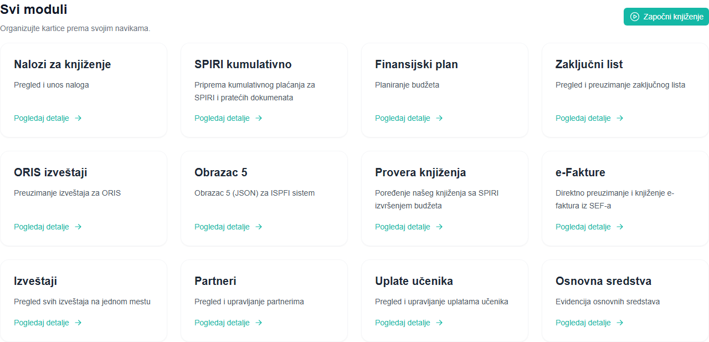

{kind=link}
Uplate učenika i završetak godine
Pregled zaduženja i uplata po aktivnosti, završni nalozi i prenos salda.
Za računovođe u osnovnim i srednjim školama
Budžet+ povezuje knjiženje, finansijsko planiranje, plaćanja i izveštavanje. Automatizuje prepisivanje podataka, dok računovođa proverava i potvrđuje knjiženje.
Upoznajte program. Postavite pitanja. Procenite kako se uklapa u vaš rad.
POVEZANO SA VAŠIM SVAKODNEVNIM RADOM

Jedan program, povezane evidencije
Od svakodnevnih knjiženja do završetka godine — pronađite podatke i nastavite posao u istoj aplikaciji.
E-fakture, SPIRI izvodi, avansi i ISKRA obračuni plata i bolovanja — uz kontrolu računovođe.
Kumulativni SPIRI XML iz više e-faktura, ručni unos i sačuvani šabloni.
Učitajte plan iz IFISUP-a i pratite realizaciju, odstupanja i grafikone.
ORIS i Obrazac 5 za ISPFI iz postojećih podataka.
Povezano knjiženje i evidentiranje sredstava, amortizacija i popis.
Pregled zaduženja i uplata po aktivnosti, završni nalozi i prenos salda.
Manje mehaničkog rada
Budžet+ preuzima podatke iz e-faktura, SPIRI izvoda i obračuna i priprema stavke za knjiženje. Vi proveravate rezultat knjiženja.
Kako su evidencije povezaneE-faktura, SPIRI izvod ili podržani obračun.
Podaci iz dokumenta koriste se za knjiženje.
Konta, klasifikacije, iznose i odgovarajući nalog.
Evidentirane podatke koristite za preglede i izveštaje.
Pronađite svoj posao
Pogledajte šta program obavlja za vas i kako vam olakšava svakodnevni rad.
Od ulaznog dokumenta do evidentirane promene.
Priprema podataka za sledeću isplatu.
Pregled poslovanja iz podataka koje već vodite.
Detalji koji ostaju povezani sa svakodnevnim radom.
Pogledajte pre nego što odlučite
Stvarni prikazi programa, od unosa dokumenta do pregleda rezultata.
Video-prikazi su iz starije verzije programa. Aktuelni izgled pojedinih ekrana može se razlikovati.
Od prvog razgovora do svakodnevnog rada
Prođimo zajedno kroz posao koji radite i način na koji vam Budžet+ može pomoći.
Prijavite se za prezentaciju i pogledajte mogućnosti koje su važne vašoj školi.
Prolazimo kroz instalaciju i pripremu za početak rada.
Već ste spremni? Zakažite instalaciju ↗Telefon, email i podrška na daljinu. Radnim danima od 9 do 15 časova.
065 917 0989Prolazimo kroz mogućnosti programa i konkretne poslove školskog računovodstva. Prijavite interesovanje, a o terminu naredne prezentacije obavestićemo vas emailom.
Program radi lokalno na vašem računaru. Za povezivanje sa državnim sistemima i preuzimanje podataka iz njih potrebna je internet veza.
Ne. Automatizacija smanjuje prepisivanje podataka, a računovođa proverava dokument, klasifikaciju i rezultat knjiženja.
Posle prezentacije dogovaramo uvođenje i instalaciju. Ako ste već spremni, termin instalacije možete izabrati preko linka za zakazivanje.
Podrška je dostupna radnim danima od 9 do 15 časova: telefonom, emailom, putem Viber-a ili WhatsApp-a. Rad na daljinu dogovaramo prema potrebi.
Sledeći korak
Prijavite se za narednu prezentaciju. O terminu ćemo vas obavestiti emailom.
Alpeon Softver koristi podatke koje unesete da odgovori na upit i dogovori prezentaciju. Slanjem forme ne prijavljujete se na marketinšku listu.
Prijava se obrađuje preko Cloudflare servisa i prosleđuje na naš poslovni email. Ne formiramo posebnu bazu prijava na sajtu. Cloudflare Turnstile služi za zaštitu forme od neželjenih zahteva.
Za pitanja o vašim podacima i zahtev za brisanje prepiske pišite na aleksandar.pejkovic@budzetplus.rs. Sajt koristi Google Analytics za statistiku poseta; sadržaj forme ne šaljemo u analitiku.